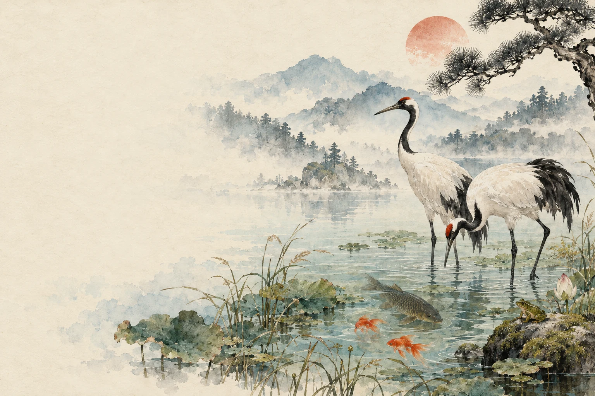

PASSAGE 01 THE AIR ABOVE
Grace, between
sky and water.
A white wing catches the first light. The crane steps through its own reflection, leaving a circle where the stillness used to be.
To move with such care
that the world barely stirs.
